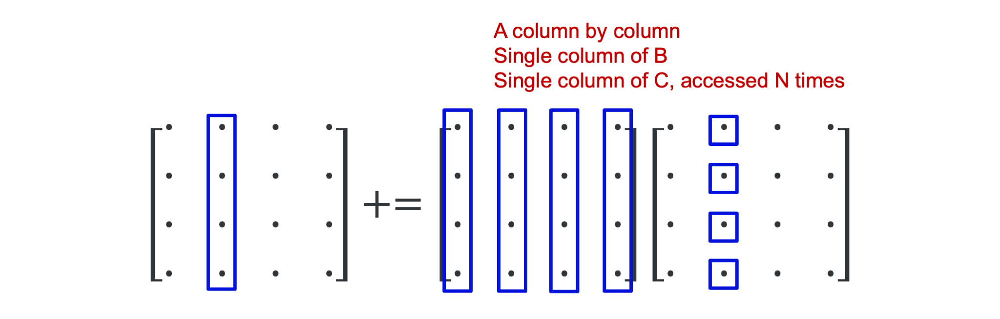

Illustration: Matrix-matrix multiplication¶
Let us illustrate the effect of the importance of optimising memory access patterns and how good libraries can help us with a problem that seems simple: the multiplication of two matrices (which we take square here to keep it as simple as possible).
The element \(c_{i,j}\) on row \(i\) and column \(j\) of the product
is computed as
We can compute the new value of \(C\) with this formula either row by row or column by column. Computing row by row results in the following pseudo-code:
for i = 1 to N
for j = 1 to N
for k = 1 to N
c(i,j) = c(i,j)+a(i,k)*b(k,j)
We'll call this the ijk-variant because of the order of the loop indices.
Computing the elements of \(C\) column by column can be done with the following pseudo-code:
for j = 1 to N
for i = 1 to N
for k = 1 to N
c(i,j) = c(i,j)+a(i,k)*b(k,j)
which we call the jik-variant for obvious reasons.
The code for matrix-matrix multiplication has three nested loops. There are 6 different permutations of the loop indices i, j and k, and all 6 result in a correct program:
| ijk | jik |
|
|
| ikj | jki |
|
|
| kij | kji |
|
|
However, even though all 6 above variants are correct, it does not mean that they will also perform the same..
Timings of a Fortran implementation¶
The following table shows run times and the performance in Gflops derived from the runtime and total number of operations for matrices of size \(N = 2500\), which require 47.4 MB of storage per matrix. The runs were all done on a node of an older cluster with Intel Xeon E5-2680v2 processors that can deliver a theoretical peak performance of 22.4 Gflops at a clock speed of 2.8 GHz.
The reason for taking this older cluster is that the caches are still relatively small so that a smaller problem size can be used to demonstrate the effect of cache misses without having to go to such a large problem size that the run time for the worst variants becomes prohibitively extensive to test easily.
The results are summarised in the following table:
| Variant | Time (s) | Gflops |
|---|---|---|
| ijk | 17.16 | 1.821 |
| jik | 24.35 | 1.283 |
| ikj | 63.68 | 0.491 |
| jki | 9.87 | 3.165 |
| kij | 40.77 | 0.7666 |
| kji | 13.29 | 2.352 |
| F95 MATMULT | 9.51 | 3.285 |
| OpenBLAS dgemm (1 thread) | 1.27 | 14.60 |
| OpenBLAS dgemm (20 threads) | 0.08 | 396.42 |
The first 6 rows are the 6 variants of the matrix-matrix multiplication. We notice that none of the implementations is fast compared to the theoretical speed of a core of this type. But the speed difference between the slowest and fastest of those 6 variants is large: a factor of 6.5x.
Fortran 95 has a built-in operation for matrix-matrix multiplication but in this case the code doesn't really perform any better.
OpenBLAS is a library of optimised routines for vector-vector, matrix-vector and matrix-matrix operations, and dgemm is the name of the BLAS routine that does the matrix-matrix multiplication that we need. We see immediately that we get a big boost and a result that is even slightly better than the theoretical speed of the core at the nominal frequency of 2.8 GHz. This is because the clock frequency on that node could not be fixed and as we were using just a single thread, we got a slight boost of the clock frequency. The result with OpenBLAS using one thread is 78.7x better than our best simple variant. However, changing just an environment variable lets us run the code using all 20 cores available on the node so without extra work we can even run at close to 400 Gflops!
Analysis of the jki-variant¶
Key to understanding the performance of the 6 variants is to realise that Fortran stores matrices column by column (C does this row by row and in a C implementation another variant would be the better one).
Let us first analyse what happens in the innermost loop of the \(jki\)-variant, which was the best in the table:
for j = 1 to N
for k = 1 to N
for i = 1 to N
c(i,j) = c(i,j)+ a(i,k)*b(k,j)
for \(j = 2\) and \(k = 3\). The figure below shows what happens in the 4 steps of the inner loop:

We use only one element of \(B\). The elements of both \(A\) and \(C\) are accessed column-wise, i.e., in the order in which they are stored in memory. This is optimal for cache use: When loading the first element, the cache will also load the next few elements in that column (assuming that it would happen to be the first element of a cache line). Typically, a cache will contain blocks of 64 bytes so 8 double precision floating point numbers (the data format used in the tests). So for the second iteration it is very likely that all the data needed is already in memory.
The effect of the innermost loop is best summarised by the following picture:
The inner loop for the given values \(j = 2\) and \(k = 3\) takes the third column of \(A\), which we could consider a vector, multiplies it with the scalar element \(b(2,3)\) on the third row and second column of \(B\) and adds that column vector to the second row of \(C\). This vector interpretation is the key to understand what happens in the middle loop.
Let us keep \(j = 2\) but now iterate over the middle loop. Each iteration of the middle loop takes a column vector of \(A\), multiplies it with an element of \(B\) and adds it to a column vector of \(C\) as is shown in the following figure:

The whole operation of the innermost two loops for \(j = 2\) is depicted in the following figure:

In all, executing the two innermost loops, we use only a single column of \(B\) and \(C\), but we do run through the whole matrix \(A\), and would do so again in the next iteration of the outer loop. If \(N\) is large enough the leftmost part of the matrix \(A\) will have been pushed out of the cache before it is again needed in the next outer iteration, but we would be working on a different set of elements of \(B\) and \(C\).
But how can BLAS then even be faster?¶
BLAS stands for Basic Linear Algebra Subprograms and is a library that contains basic linear algebra building blocks used in other libraries such as Lapack (a library to solve dense linear systems and eigenvalue problems). It was defined in three phases
- BLAS 1 from 1979 defined a set of vector-vector operations to make it easier to exploit vector computers.
- BLAS 2 extended that set in 1986 with matrix-vector operations. The extensions were triggered by the evolving needs to get a good performance on large computers, where exploiting only vector operations was not enough anymore and more care needed to be taken of memory accesses too.
- BLAS 3 extended BLAS in 1988 with matrix-matrix operations, that help to better exploit a cache hierarchy.
There is a reference implementation of the BLAS API in Fortran, but that implementation doesn't really give you a high performance. However, vendors of microprocessors invest a lot of time in making an optimised implementation for their processors, and there are also a couple of open source projects that did so. A popular closed source vendor implementation is the Intel MKL library (which contains much more than just BLAS). OpenBLAS and BLISS are two recent open source implementations.
The DGEMM code in an optimised BLAS library is a lot more complex than any of our six variants. Optimised implementations work by splitting the matrices in small blocks that fit in cache and compute the matrix-matrix product out of the matrix-matrix products of those smaller blocks. Some libraries may even involve some assembler programming.
Blocking for cache reuse is a strategy used by many optimised libraries, also in other domains.
A small surprise...¶
In the following table we repeated our experiment but now comparing the GNU Fortran compiler to the Intel (classic) Fortran compiler:
| Variant | GNU Gflops | Intel Gflops |
|---|---|---|
| ijk | 1.821 | 1.60 |
| jik | 1.283 | 3.40 |
| ikj | 0.491 | 1.60 |
| jki | 3.165 | 3.40 |
| kij | 0.7666 | 10.74 |
| kji | 2.352 | 10.68 |
| F95 MATMULT | 3.285 | 10.97 |
| BLAS dgemm (1 thread) | 14.60 | 24.75 |
| BLAS dgemm (20 threads) | 396.42 | 417,64 |
Not only does the Intel compiler in general produce better performance than the GNU compiler for this code, with the fastest result being more than three times faster than the best result with the GNU compiler (and another variant becoming the preferred one), but we also notice that the performance is the same for pairs of variants. The \(ijk\)- and \(ikj\)-variants have the same performance, and so have the \(jik\)- and \(jki\)-variants, and the \(kij\)- and \(kji\)-variants. What these variants have in common is that the first letter is the same. The Intel compiler is sometimes capable of recognising a bad memory access pattern and exchanging the order of the two innermost loops. We have seen this happening in less trivial user code also. The fact that a different variant is now the best one may be the result of the more powerful vectoriser in the Intel compiler that may have found a better way to vectorise those particular variants.
And on a machine with less cache memory...¶
Repeating the same experiment with the same matrix size on a laptop with far less cache than a cluster node shows an even more interesting result:
| Variant | Time (s) | Gflops |
|---|---|---|
| ijk | 297.40 | 0.105 |
| jik | 295.53 | 0.106 |
| ikj | 1002.28 | 0.031 |
| jki | 11.67 | 2.678 |
| kij | 1002.48 | 0.031 |
| kji | 15.85 | 1.971 |
| F95 MATMULT | 17.06 | 1.832 |
| OpenBLAS dgemm (1 thread) | 3.42 | 29.979 |
| OpenBLAS dgemm (2 threads) | 1.80 | 57.349 |
The speed difference between the slowest and fastest of our 6 naive variants is now already a factor of 86. And again we see a more than 10-fold increase from the best variant to a single-core run with a good BLAS library, and a further near doubling of the performance when we also employed the second core.